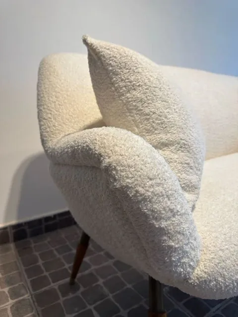

Tapicería contemporánea · Córdoba
Volvé a elegir
tus muebles.
Retapizado y restauración en Córdoba.
El oficio de renovar lo que tiene valor para vos.
Empecemos
por tu idea.
Dejanos estos datos y seguimos por WhatsApp. Las fotos y los detalles los vemos ahí.

01 / Una nueva mirada
Hay muebles que
merecen otra historia.
Una forma que te encanta. Un rincón que pide un cambio. Una pieza que te acompaña hace años. Trabajamos sobre lo que ya existe para volver a darle lugar en tu casa.
Contanos sobre el tuyo
02 / Qué hacemos
Tu mueble. Nuevas posibilidades.
Retapizado de sillones
Renová la tela, la comodidad y la presencia de esa pieza que reúne todo.
Quiero renovar mi sillón 02Retapizado de sillas
Texturas, colores y terminaciones para volver a disfrutar cada encuentro.
Quiero renovar mis sillas 03Restauración y otras piezas
Respaldos, banquetas y muebles con historia. Evaluamos juntos qué necesita cada uno.
Tengo otra pieza en menteCada trabajo se evalúa según el estado del mueble, sus medidas y los materiales elegidos.
03 / Trabajos Valturi
Ideas que ya
encontraron su lugar.


La diferencia
está en cómo se siente.
04 / El punto de partida
Primero,
la sensación.
Suave, con cuerpo, con carácter. Elegir una tela también es elegir cómo querés vivir tu espacio. Te acompañamos a encontrar la indicada para tu mueble y su uso.
Explorar telas y materiales


05 / Así empezamos
Del “lo estoy pensando”
al “hagámoslo”.
- 01
Nos contás tu idea
Completás el formulario y seguimos por WhatsApp. Ahí nos compartís fotos y medidas de tu mueble.
- 02
Lo pensamos juntos
Evaluamos el trabajo, te orientamos con los materiales y conversamos sobre el presupuesto y los tiempos.
- 03
Le damos una nueva vida
Con la propuesta acordada, coordinamos los próximos pasos y trabajamos en cada detalle.

06 / La mirada Valturi
El oficio de hacer.
La intención de cuidar.
Creemos en los muebles que tienen algo para contar. En el valor de una buena elección. Y en el trabajo artesanal que transforma una pieza sin perder lo que la hace propia.
Desde Córdoba, le damos una mirada cálida y contemporánea al retapizado y la restauración.
Conocé más de ValturiTu mueble tiene una próxima historia.